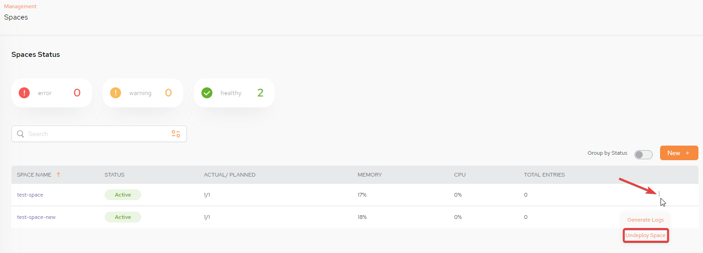
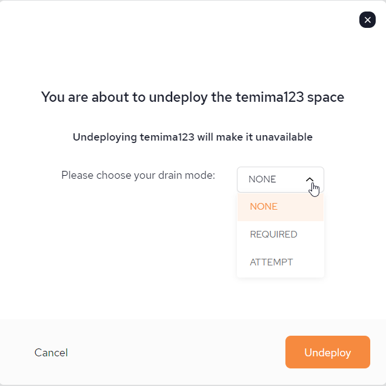

To add a new space, click New + and fill in the new space parameters, as shown below.
Space Name –Select which
The Space name must be in lower case and can contain numbers. It can only contain special characters of "-" or "." and must not exceed a length of 63 characters.
Number of partitions - Number of partitions defined for the space.
High Availability – Toggle to on if the space should be high availability (including the backup).
Advanced/Context properties/Property name and Property value – Name and value pairs for additional properties. Click + to add a property and value, delete to remove. The defined properties and their values are used as part of the deploy process for various configuration purposes.
To enable a Space for MVCC follow the steps outlined in Configuring a Space for MVCC
Create Space - Click this to create the Space.
A space can be undeployed by selecting the kebab menu (vertical three-dot menu) on the far right and selecting Undeploy Space:

The following popup is displayed:

Drain mode specifies the desired drain behavior on shutdown The options are:
NONE - This is the default which specifies no drain before undeploy.
REQUIRED - Undeploy even if drain did not complete in timeout.
ATTEMPT - Undeploy only if drain succeeded in timeout.
For more information: